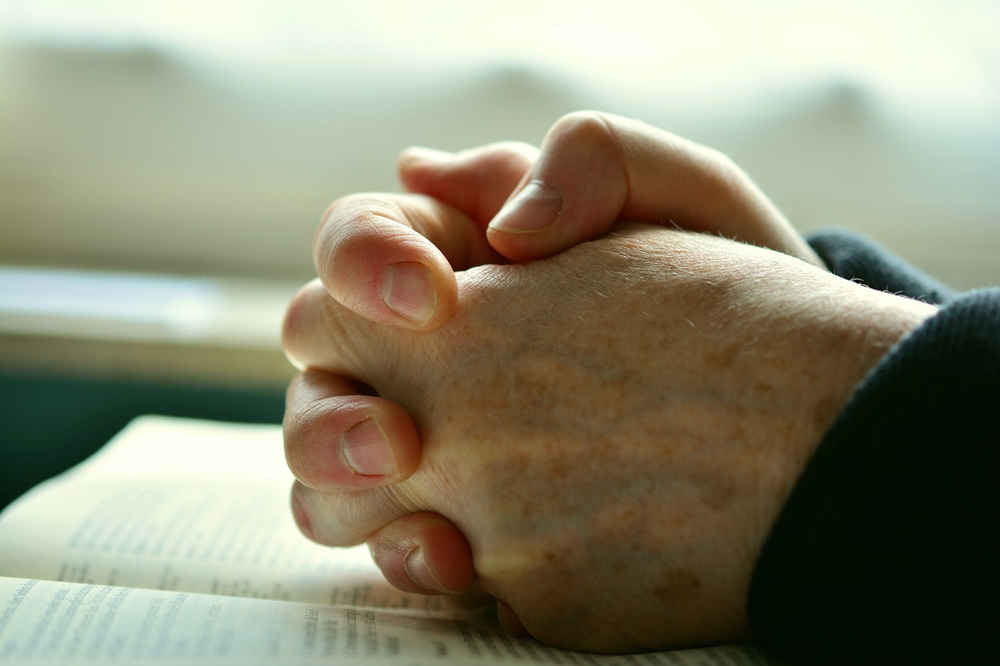

Man reading his Bible

The Bible
Featured Articles
How to Make Prayer a Daily Habit
Prayer is an essential part of the Christian life, but many of us struggle to make it a daily habit. I would like to share an article in the internet that helped me develop a habit of prayer. In this article, tips and strategies are shared for incorporating prayer into your daily routine.
You are leaving my website. Read More at ourdailybread.org
Living a Sustainable Lifestyle as a Christian
As Christians, we are called to be stewards of the earth. This next article inspired me to be one good steward. In the past, I really did not care much about others, but I am glad I read about the "11 benefits of being a Christian." This article in the internet explores what it means to live a sustainable Christian lifestyle, and it offers practical tips that are easy to follow.
You are leaving my website. Read More at stmarkscamberwell.org
The Importance of Service in the Christian Life
Jesus modeled a life of service, and as Christians, we are called to follow in his footsteps. As we get to know Him more and recognize how much He loves each and everyone of us, His love is so powerful to lead us to repentance, conversion, and service. I would like to share with you this next article that inspired me to be a person committed to serving others by being part of a local church ministry. I invite you to explore the many benefits of serving others and getting involved in your community.
You are leaving my website. Read More at withallwisdom.org